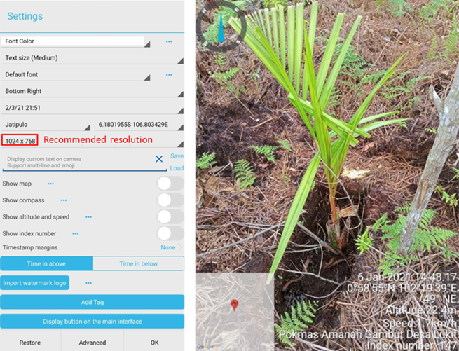
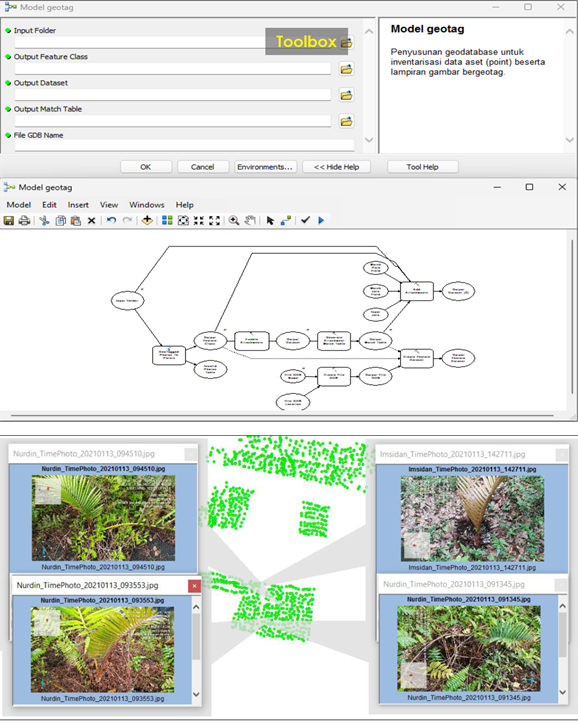
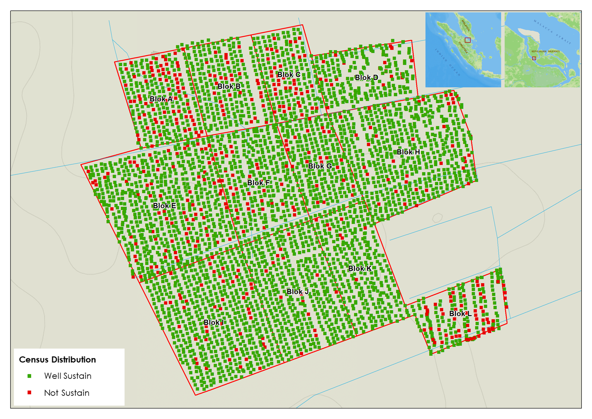
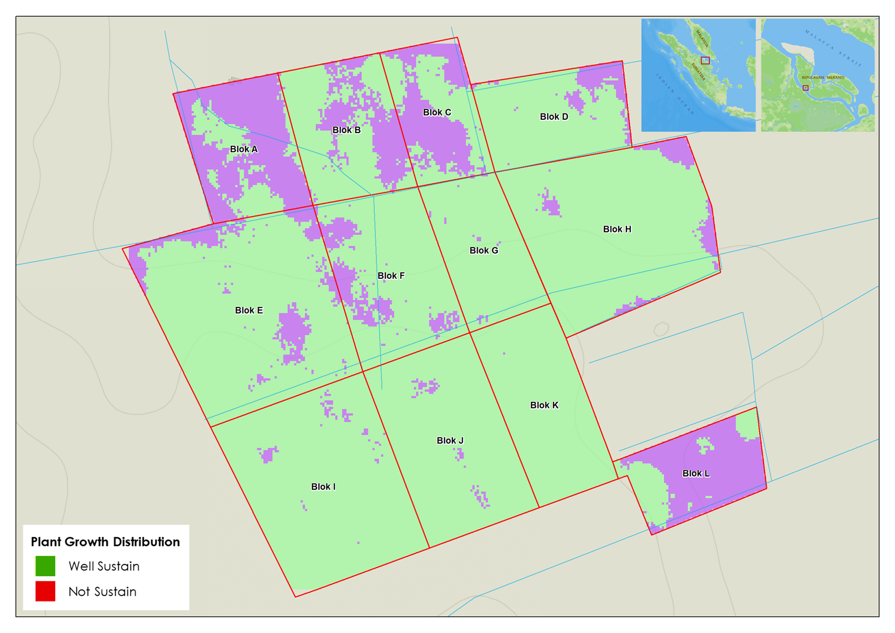
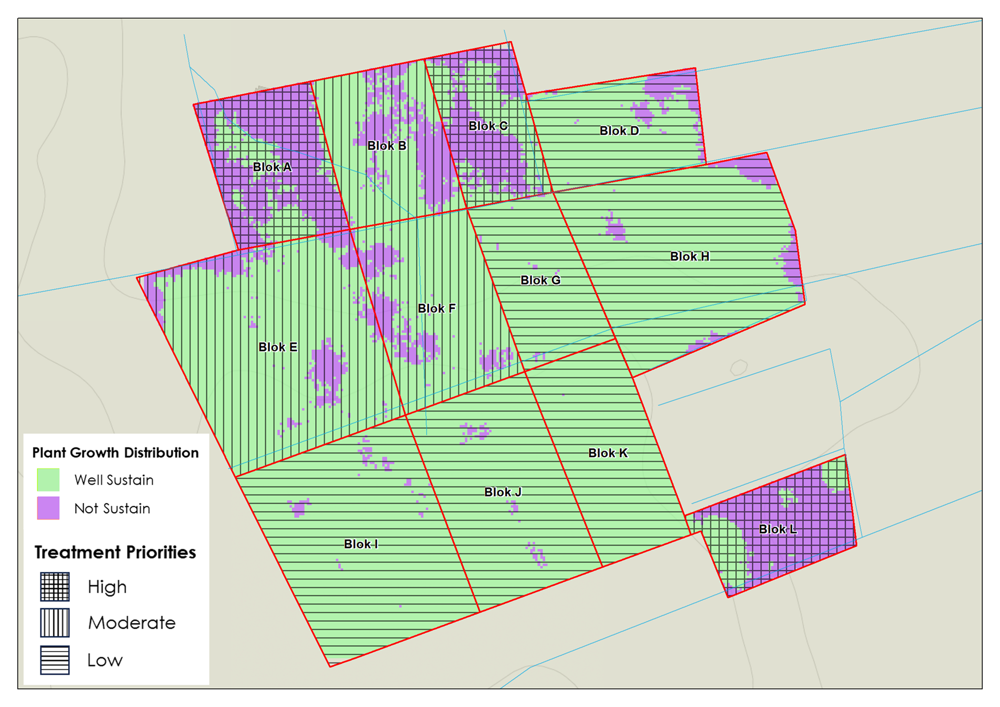
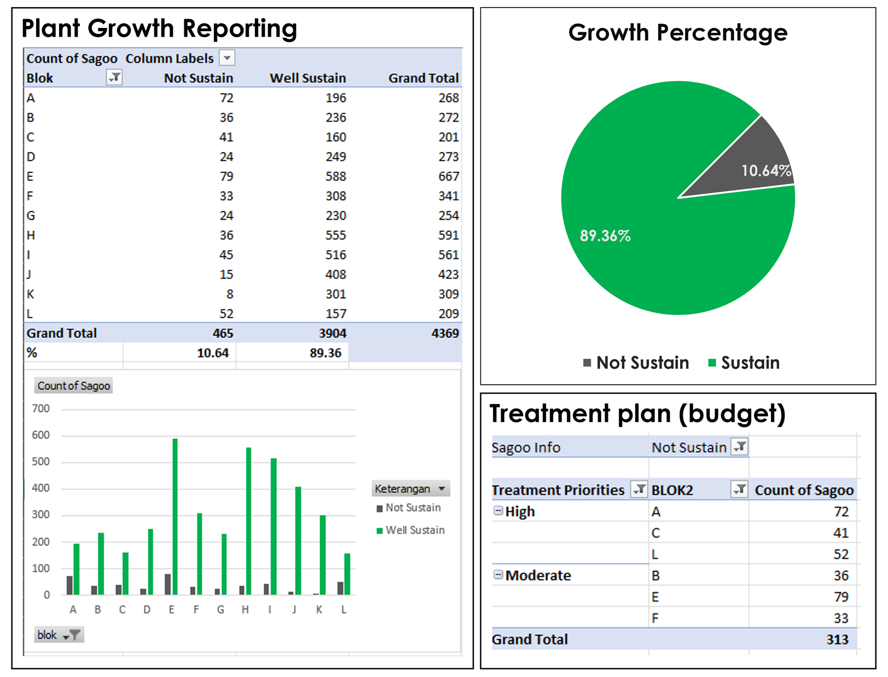

Plant Cencus Mapping
Sat 28 Mar 2026 • 16:19 GMT by Spatiality
Cencus for a plant? That sounds unrealistic!
Here’s the story, the project is aimed to enhance the future livelihood through sagoo extencification. 450 hectares for 30 farmer groups across Padang (peat) Island home of sagoo in Kepulauan Meranti, Riau We successfully planted at least 1.6 million of sagoo during 2022 to 2023. The crazy part went from the monitoring result which stated that survival rate of sagoo is only 48%, and the boss ordered to cencus all the plant. I have no choice but to comply, asking for help from all the farmers to engaged the cencus.

TimeStamp Camera Settings and Output Results Documentation by Spatiality
I gather all the farmer groups representative to cencus all their plants using a TimeStamp Camera. I provide a technical guide on how to use it offline but still retrieve gps signal on field. Once they understand, they commit to do the cencus altogether with their member. It took 1 month for photo tagging, stored in my harddisk which I left for them, then shipped to Jakarta Office. Why didn't use WhatsApp or online storage? First, the getotagged photo contains coordinate in its metadata will be compressed if shared to any messenger app. Share the photos as document or upload them to the online storage is currently unable to do, since the place is lack of stable internet connection. Thus, they have to transfer the files via USB connection. I surprised that each photo were organized in specific folder, even survived plant and dead plant were separated to a different folder. I begin to resize all the photos using resizer software, rename them in bulk, then plot it all to GIS.
Geotagged Photo to Geodatabase Workflow
The geotagged photos are then processed and analyzed to create a geodatabase that contains information about the location, attributes, and survivability status of the sago plants. This geodatabase can be used to monitor the progress of the plantation, identify areas that require attention, and make informed decisions about future planting and maintenance. The use of geotagged photos allows for a more accurate and efficient way to collect data on the sago plants, which can ultimately lead to better outcomes for the farmers and the environment.

Geotagged Photo to Geodatabase Workflow. Documentation by Spatiality
Analysis and Result
A density analysis is performed to figure where plant is mostly survived and dead, see the picture below. This give us insight to the land characteristic against sagoo growth. The density map of sagoo will figure where plantation blocks should be prioritized for treatment, and where the plant is mostly survived, so we can learn from it and replicate the same land characteristic for future planting.

Sagoo Distribution of Lukit Block. Produced by Spatiality

Plant Growth Distribution of Lukit Block. Produced by Spatiality
There are two types of sagoo species planted in the project area. Given the density analysis, I can figure which land characteristics are suitable to each sagoo species, what kind of land preparation should be performed to ensure plant survivability rate, and what kind of land is not recommended for sagoo plantation. Along with field findings during monitoring, sagoo is typically grows in wetlands along riparian zones. But not limited to these areas where rubber plant grows. Spiked sagoo most likely grows on inundated land, while common sagoo are likely suitable to grow in least wet land. To ensure the survival rate, sago seedlings must be nurtured until sprouted and the leaves unfold. Once the seedlings are planted, make sure the water table is not too shallow, especially during dry season. The planting holes should be spaced appropriately to allow for proper growth and development of the sagoo plants. The land cover crops should be maintained to keep the soil moist. Regular monitoring and maintenance are crucial to ensure the health and productivity of the sagoo plantation.

Treatment Priorities of Lukit Block. Produced by Spatiality

Plant Growth Reporting of Block Lukit. Produced by Spatiality
I also generate a plant growth reporting, so we can see the successful growth percentage and make accurately budget decisions based on the data for replanting and expansion purposes. This is an excellent example of how a low end smartphone can be utilized to enhance agricultural practices and improve livelihoods for farmers.
In the end, it is not about which sampling method is better. Cencus may capture more comprehensive data, but it requires significant time and resources. Probability sampling might be more efficient for large-scale assessments, as long as the sample size is adequate. And more importantly, whatever the method chosen, the user should not only understand statistics and its limitations, but also consider the context and objectives of the case.